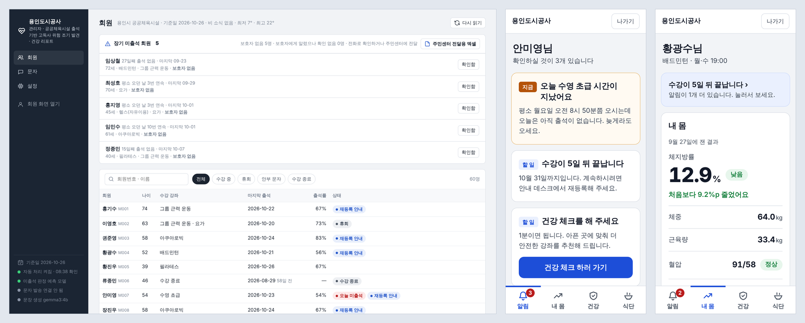

용인도시공사 · 2026 공공 AI 대전환 챌린지 세션 1 · 시연판
공공체육시설 출석 기반 고독사 위험 조기 발견 · 건강 리포트
혼자 사는 고령 회원이 안 보여도 아무도 모르는 문제를, 새 장비 없이 체육시설 출석 기록으로 평소 시간에 안 온 날을 찾아 본인·보호자·주민센터 순으로 알려 해결합니다.
관리자 화면
- 장기 미출석 회원 명단 (보호자 없음 먼저)
- 회원별 출석·평소 시간·문자 기록
- 문자 종류별 보낼 차례, 설정
관리자 화면 열기
회원 화면 (휴대폰)
- 평소 시간에 안 오면 뜨는 알림
- 30일 뒤 체지방률, 출석 달력, 강좌 추천
- 건강 체크, 식단 기록
회원 로그인
바로 들어가 보기
| 회원번호 / 태어난 해 | 볼 것 | |
|---|
M007 / 1972 | 평소 월요일 아침 수영 회원. "오늘 수영 초급 시간이 지났어요" 알림 | 열기 |
M051 / 1956 | 평소 오던 날 여러 번 연속 미출석. 보호자 등록과 안부 단계 | 열기 |
M004 / 1974 | 30일 뒤 체지방률 4가지 경우, 지난 측정, 출석 달력, 추천 강좌 | 열기 |
| 관리자 | 장기 미출석 5명, 그중 보호자 없음 5명 | 열기 |

왼쪽부터 관리자 화면, 회원 알림, 내 몸 리포트
시연판에서 안 되는 것. 가상 회원 60명, 2026-10-26 낮 12시 기준으로 미리 그린 화면입니다. 저장, 문자 발송, 음식 사진 읽기, 주민센터 엑셀 내려받기, 지도는 설치판(bash setup.sh → bash run.sh)에서 동작합니다.